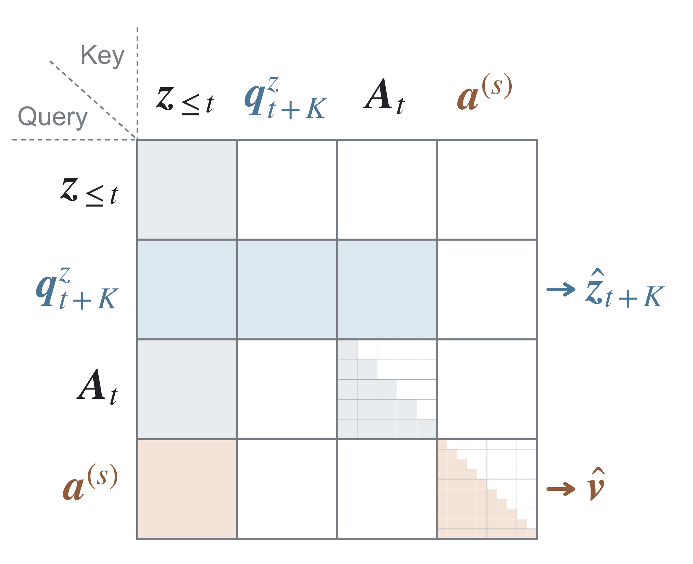
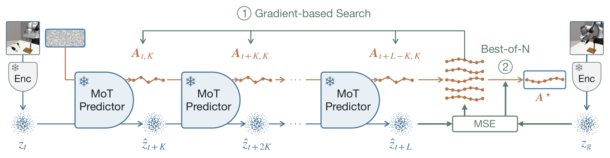
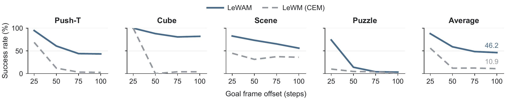
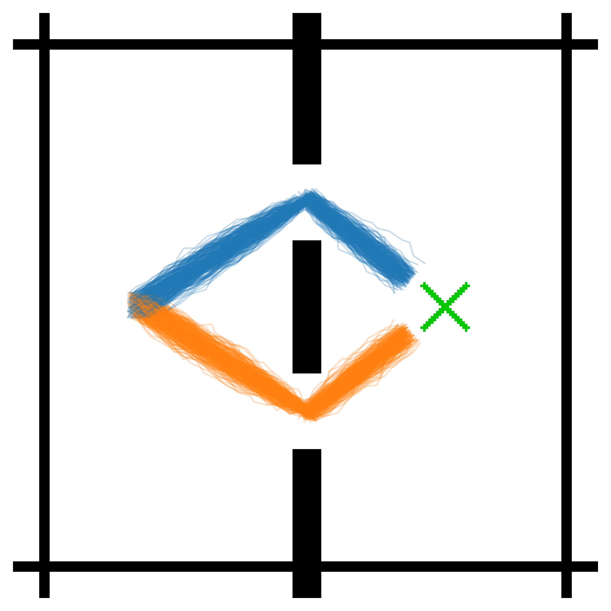
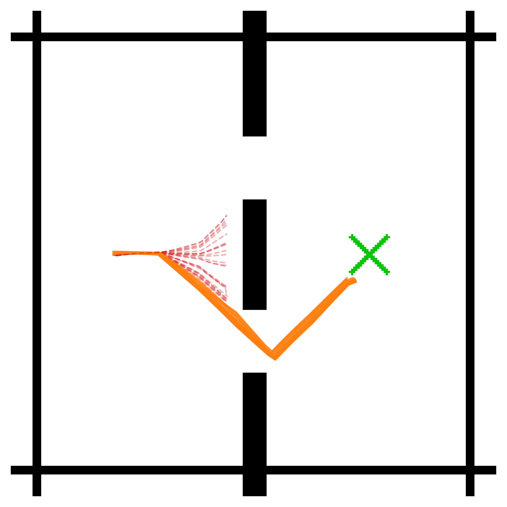
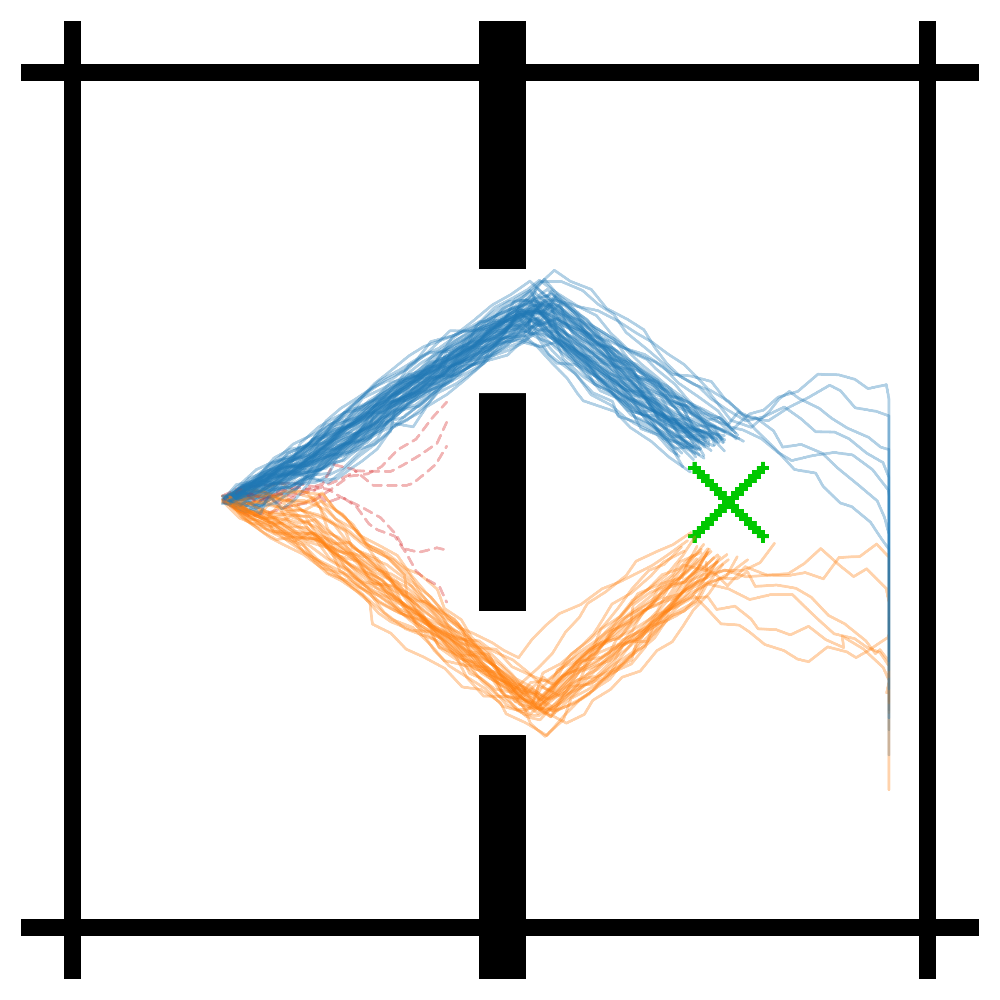
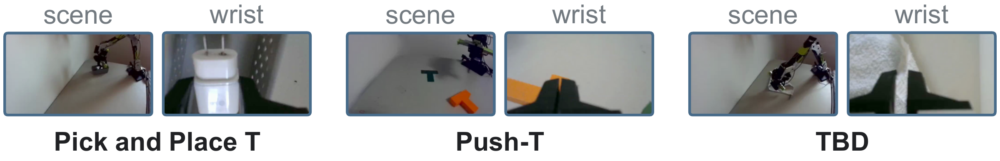

The common protocol specifies a goal image 25 steps later in the same trajectory and permits 50 executed actions.
Overview
Joint-embedding predictive architectures (JEPAs) learn compact latent world models without pixel reconstruction. Existing JEPAs typically decouple representation and dynamics learning from downstream control, while their demonstrated scope remains confined to short-horizon tasks with limited behavioral complexity.
We introduce LeWAM: an end-to-end JEPA with two ingredients: a joint prediction objective over latent states and actions, and an isotropic Gaussian constraint on the latent states. A shared predictor couples action-conditioned dynamics with stochastic action modeling, supporting direct control and efficient planning through latent imagination.
With 17M parameters and single-GPU training, evaluation spans eight simulated tasks and physical robots. Goal-reaching planning is the primary evaluation; goal-free behavior cloning separately assesses direct execution. Physical-state probes and dynamics diagnostics examine what the learned representations capture.
TL;DR: Learn representations, dynamics, and a stochastic policy together. Act directly, or sample candidate plans and refine their actions through the learned dynamics.
Joint Learning from Pixels
One encoder and a shared predictor. History, future, and goal images share an encoder. A mixture of transformers (MoT) uses separate state and action transformations with masked attention. In simulation, the encoder and predictor train jointly from scratch, with a 192-dimensional latent state.
Joint prediction plus SIGReg. Clean action chunks condition future-state prediction, supervised by latent mean squared error. Noisy actions learn a velocity field through flow matching. SIGReg regularizes the latent distribution while both prediction tasks shape the representation.
ℒLeWAM = ℒdyn + ℒact + λsig ℒSIGReg
Goal-independent dynamics. The state query reads history and clean actions. Action-flow queries read history and a causal noisy-action prefix. Goal and remaining-horizon conditioning enter only the action readout, keeping the dynamics independent of the requested goal.


Direct Control and Planning
Direct control. Integrating the learned action velocity field from Gaussian noise generates a 2K-action chunk. The controller executes its first K actions, observes the environment again, and repeats.
Planning has two stages, with the model frozen:
- Global search in the action distribution. Sample one population of N complete candidate plans. Each plan alternates stochastic action generation with latent dynamics rollouts, extending the imagined history and updating the remaining horizon. Select the candidate with the lowest terminal latent goal error.
- Gradient-based search. Starting from that candidate, optimize the actions through the differentiable dynamics. A proximity penalty and clipping constrain refinement; retain the best iterate, including the initial candidate.
C(a) = MSE(ẑt+L(a), zg)
In receding-horizon execution, run the first K actions and repeat both planning stages from the new observation.

Simulation Experiments
WorldForge8 spans navigation, planar control, articulated manipulation, bimanual coordination, dexterity, and contact-rich dynamics. The suite includes the four LeWM environments and four additional navigation and manipulation settings.
Current manuscript overview

Provisional results. These aggregates are not finalized: DrawerCleanup and Transport use earlier measurements, and the 100-step comparison includes a preliminary Cube result and a baseline layout placeholder. The 10.8× throughput comparison and robot-frequency comparison still require finalized timing configurations. See the protocol-specific results below.
Short-horizon goal reaching

Increasing the goal horizon
The horizon study evaluates goals 25, 50, 75, and 100 steps ahead. Push-T starts from frame zero, permits twice the goal horizon in executed actions, and replans every 25 steps.

Goal-free task completion
Behavior cloning evaluates direct control from observation history, with no goal image or remaining-horizon input. These results are separate from goal-reaching planning.
| Method | Cube | DrawerCleanup | Transport | ToolHang |
|---|---|---|---|---|
| Diffusion Policy | Pending | 54.7 | 45.3 | 84.7 ± 3.1 |
| LeWAM | Pending | 52.7 | 61.3 | 80.0 ± 3.5 |
LeWAM uses one camera. DrawerCleanup and Transport standard deviations remain pending in the manuscript; expert replay reaches 72.0% on DrawerCleanup. The table preserves the current manuscript values pending final result reconciliation.
Additional protocol: start-to-end goal reaching

Representations and Stochastic Actions
Physical-state probing and SIGReg
Linear probes decode the Push-T block state and ToolHang tool state. The current ablation compares LeWAM with and without SIGReg, measuring effective rank, physical-state R², and success under direct control and planning.
| Task | SIGReg | Effective rank | Probe R² | Direct SR (%) | Plan SR (%) |
|---|---|---|---|---|---|
| Push-T | Yes | 32.71 | 0.947 | 80.0 | 94.7 |
| Push-T | No | 4.72 | 0.803 | 72.7 | 78.7 |
| ToolHang | Yes | 19.75 | 0.929 | 92.0 | 93.3 |
| ToolHang | No | 8.20 | 0.868 | 92.0 | 90.7 |
Effective rank uses the participation ratio. Uncertainty estimates for these ablation records remain pending. Physical-state decodability does not by itself establish dynamics generalization or reliable control under distribution shift.
Qualitative action distributions
In two-door navigation, demonstrations use both passages. The MSE action head concentrates on the lower passage and produces collisions in the displayed examples, while the flow-matching head samples both routes.



Qualitative examples. Matched quantitative action-head comparisons, encoder controls, and dynamics-generalization diagnostics remain pending in the manuscript.
Physical-Robot Control
The physical study evaluates Pick and Place T and Push-T, with a third task still pending. It compares an end-to-end LeWAM model and a variant built on a frozen V-JEPA 2.1 backbone against the current baselines.
The policy uses a scene camera and a wrist camera. A seven-DoF robot sends observations to a remote inference machine, receives action chunks, and executes joint targets at 30 Hz. Each method is evaluated in 30 trials per task.

| Method | Pick and Place T | Push-T |
|---|---|---|
| Diffusion Policy | 19 / 30 | 16 / 30 |
| π0.5 | 14 / 30 | Pending |
| GPT-6 Astra (one-shot + goal) | Pending | Pending |
| LeWAM, frozen V-JEPA 2.1 | 15 / 30 | 12 / 30 |
| LeWAM, end-to-end | 16 / 30 | 8 / 30 |
These are the current manuscript counts. Final robot results, per-trial uncertainty, the third task, and measured inference costs remain pending. The 30 Hz execution rate is distinct from a complete model-and-network latency measurement.